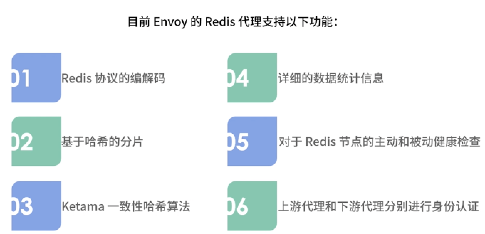
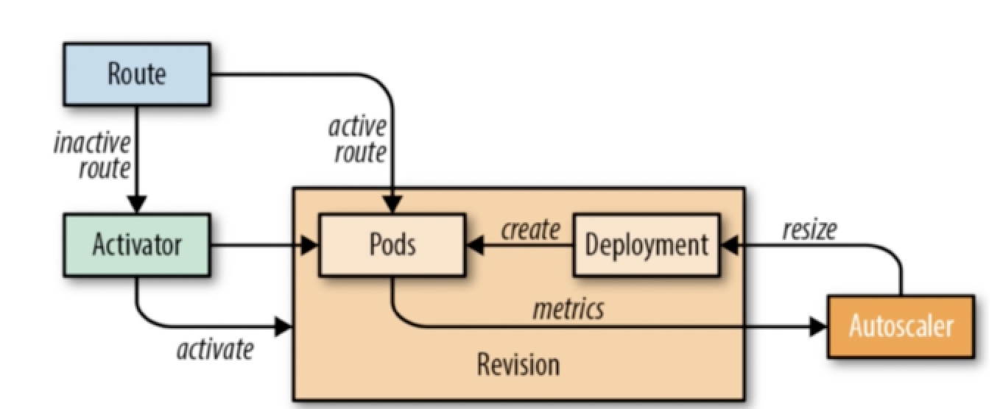
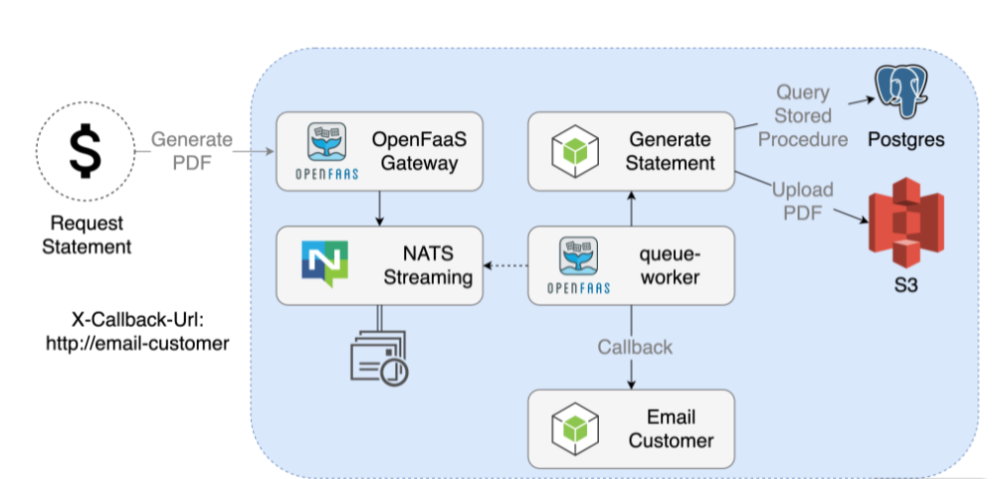

第十节 Mesh的未来发展与可行性方向
1、中间件 Mesh 化的可行性
Service Mesh 主要接管服务间的流量，包括边缘网关的南北向流量和内部通信的东西向流量。
- Service Mesh 主要接管服务间的流量
- 服务和中间件通信的流量也非常重要，是未来整个微服务 Mesh 化中重要的一环。
FaaS（Function as a Service）也是未来微服务架构重要的演进方向之一，在 FaaS 架构中，Service Mesh 同样可以作为底层基础设施接管服务间的流量。
1-1 中间件 Mesh 化
著名的数据面已经支持了诸多数据库和队列中间件

1-2 Redis 代理
Envoy 可以作为 Redis 的代理，部署在每个服务的节点上，这样就无须传统的 Redis 中间件负责 Redis 集群的代理工作，也不需要传统 Redis 官方提供的 Smart Client。
Envoy 可以替代这部分功能，控制 Redis 集群，路由到正确的 hash 分片节点上。
使用 Envoy 做 Redis 代理，既避免了传统的 Smart Client 的升级维护问题，也避免了传统的 Redis 中间件中心化的问题。
通过 Mesh 的架构、Metrics 注入等方式，可以看到到底是哪个服务调用的 Redis，再配合服务间的链路调用图，这样整个内网间所有流量的链路调用图就可以绘制出来了。
目前 Envoy 的 Redis 代理支持以下功能：
- Redis 协议的编解码；
- 基于哈希的分片；
- Ketama 一致性哈希算法；
- 详细的数据统计信息；
- 对于 Redis 节点的主动和被动健康检查；
- 上游代理和下游代理分别进行身份认证。

Envoy 对于 Redis 的支持相对比较简单，当然未来社区也在规划支持更多的功能，包括熔断、链路追踪、重试等
数据库中间件产品（比如 Redis 集群中间件、MySQL 集群中间件）的功能主要是对数据做分片处理，以解决单个 Redis 或者 MySQL 节点无法处理的负载。
这些功能最早也在 SDK 中，因为维护升级不方便，所以演进成了数据库中间件。随着 Mesh 化架构的流行，在服务本地部署一个 Sidecar，就可以解决数据库中间件产品中心化的问题。
数据库中间件的 Mesh 化和传统的服务 Mesh 化，关注的点略有不同：
数据库的中间件产品更关注的是对于数据的分片处理，比如 MySQL 的分库分表等算法、Redis 集群的分片算法等。但也有很多功能是通用的，比如限流熔断等治理功能、链路追踪、Metrics 监控，甚至服务发现等功能。
1-3 FaaS
FaaS（Function as a Service）是一种在无状态容器中运行的事件驱动模型。
简单来说，Function 是比 Service 更小的程序单元，如果要进行标准化的 FaaS 化改造，就需要进一步拆分，将微服务中的每个方法都拆成一个单独的服务。
FaaS 依然是一种非常理想化的架构，比如在服务 0 节点的情况下要消耗大量的时间等待服务启动，但 FaaS 中的一些核心思想，依然是微服务架构的发展趋势，或者说它们可以直接落地，比如强大的自动扩缩容能力、基于异步的事件驱动模型等
FaaS 的开源方案有 Knative、OpenFaaS、Fission、Kubeless 等，下面我们简单介绍一下这几种常见的开源方案。
- Knative
Knative 是谷歌牵头发起的 Serverless 项目，是基于 Kubernetes 和 Istio 的 Serverless 解决方案。
- OpenFaaS
OpenFaaS 是一个使用 Docker 构建无服务器（Serverless）功能的框架，可以部署在 Kubernetes 或者 Swarm 平台。通过 Watchdog 启动进程的方式进行函数式调用。
- Fission
Fission 是一款基于 Kubernetes 的 FaaS 框架，通过 Fission 可以轻而易举地将函数发布成 HTTP 服务。它的主要特点是 Fission 维护一个容器池，可以做到函数 100ms 冷启动。
- Kubeless
Kubeless 是基于 Kubernetes 的 Serverless 框架，借助 Kubernetes 提供自动扩缩容、API 路由、监控的功能。
1-4 Knative
Knative 包含三个核心组件，分别是负责服务处理的 Serving、事件处理的 Eventing，以及负责云原生 CI/CD 构建的 Tekton。
- Serving
Knative Serving 组件依托于 Kubernetes 平台和 Istio，提供服务自动扩缩容、服务路由、流量代理、容器部署等功能。
- Eventing
Eventing 主要由事件源（EventSource）、事件处理（Flow）以及事件消费者（EventConsumer）三部分构成，定义了 CloudEvent 的通用事件标准。
- Tekton
Tekton 是一个功能强大且灵活的 Kubernetes 云原生 CI/CD 开源框架。
下图中的 Route 可以理解为 Istio Gateway 的角色。实际上，大多数 FaaS 架构，都有一个类似 API Gateway 的角色，主要用来处理流量的转发，在 Pod 数量为 0 时，也会做一些特殊处理，比如此时要 hold 住流量，等待 Pod 启动。

流量经过 Gateway（Route）后，会有两个分支，
- 一个是服务的 Pod 存在的时候，流量会直接路由到 Pod 上面；
- 另外一个在 Pod 缩容到 0 的情况下，会转发到一个 Activator 的组件中，这个组件的主要功能是对容器资源的调度。
当有流量被转发到 Activator 组件时，它会主动通知 Autoscaler 组件进行扩容操作，这时 Autoscaler 会创建新的 Pod，提供服务。
此时 Activator 对启动的 Pod 进行健康检查，检查通过后，将流量转发到相应的 Pod 上面。
Activator 组件处理完流量后，会将结果返回给 Gateway
在流量被转发到 Activator 组件这个分支的过程中，如果 Pod 数量为 0，本次流量处理的时间在很大程度上就取决于 Pod 启动的时间，而这个时间大概率是秒级别的。
但在实际生产中，一般的请求需要毫秒级别返回结果，秒级别的响应速度很难接受，这也是 FaaS 架构目前在落地中面临的最大问题，大部分对响应速度要求比较高的场景，Pod 缩容为 0 都是难以接受的。
所以 Knative 也提供了 Pod 是否缩容到 0 的选项，这样更有利于 FaaS 架构的落地。尽管没有做到完全的 Serverless，但能够拥有强大的扩缩容能力已经非常有诱惑力了。
1-5 OpenFaaS
统的微服务调用。在这张图片中，我们的需求是从数据库中读取数据，并根据获取的数据生成一个 PDF 文件上传到 S3 服务器中。但是这个场景消耗的时间会比较长，大概是 2 分钟左右，而且下图的同步架构，会阻塞程序进程，前端的响应也会等待很长时间。
在传统的微服务架构中，一般我们也不会采用下图的同步系统，而是采用异步队列系统解决：将生成 PDF 作为事件存入队列中，通过队列消费生成 PDF 并上传到 S3 服务器，这样就可以大大提高微服务的同步响应速度了。
在 FaaS 中有没有更好的解决方案呢？我们来看 OpenFaaS 中的异步方案。
1-6 异步
在 OpenFaaS 中， OpenFaaS 将请求作为事件直接放入 NATS 这个队列系统中，对于使用者来说，他并不需要关心这是否是一个异步调用。
这个调用的编程方式，依然是 HTTP 的方式，只是 OpenFaaS Gateway 自动将此次 HTTP 调用放入了 NATS 队列中，通过 queue-worker这个进程进行队列消费，再通过 HTTP 请求 Generate Statement 服务的方式触发此次服务调用，用看起来同步的方式完成了整个异步调用。

整个运行过程

- 在这个架构中，使用者无须关心甚至无须感知 NATS 队列系统，对于使用者来说，这看起来就是一次普通的 HTTP 服务调用。
- 而 PDF 生成服务的编写者，也不需要处理复杂的队列消费，对于他来说，也和其他同步服务一样，提供一个简单的 HTTP 服务接口就可以了。
- FaaS 架构让队列系统和业务解耦，